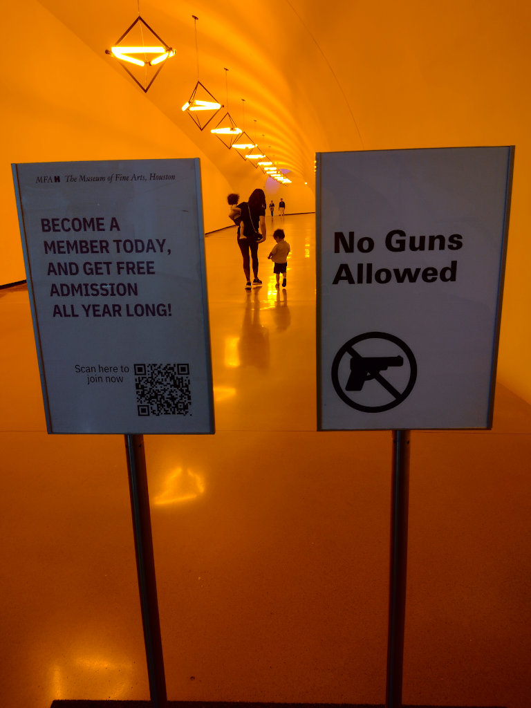

Сбылась ещё одна марсианская мечта: я добрался до солнечного затмения
Причем в довольно марсианской стране – диком ковбойском Техасе, который не-техасские американцы называют "культурной пустыней", что является сильным преувеличением. Начальники ковбоев уже к началу 20-го века накопили довольно много денег и стали вкладывать их в частности в предметы искусства. А потом там открыли нефть и денег стало ещё больше. В результате в городе Форт-Уорт (Fort Worth), ковбойской столице США, наряду с площадками родео есть три первокласных художественных музея, и это не считая таких же первоклассных музеев соседнего Далласа и чуть более удаленного Хьюстона.
Вот так ковбои отдыхают на фоне Уорхола в Форт-Уорте:
Бог дождя из Далласа:
А немного подальше (примерно в восьми часах езды от Далласа дальше на дикий Запад) находится место силы, Марфа, городок в пустыне, который был назван в честь какой-то героини Достоевского. Потом он появилась военная база, а потом эту базу за бесценок купил нью-йоркский скульптор Дональд Джадд и превратил в музей для себя и своих друзей, одним из которых был Илья Кабаков:
Расстояния на этой военной базе огромны, можно буквально чуствовать пространство, абстрактная скульптура и концептуализм воспринимаются не выпендрёжем, а естественным состоянием души.
Следующая фотография не моя, мы на улице, уже в городке, даже не на военной базе, встретили фотографа-любителя, который рассказал, как художник Робер Ирвин отреставрировал полуразрушенную больничку и превратил её в памятник света.
Даллас знаменит и как место убийства Джона Кеннеди с интересным памятником, я снимал изнутри этого памятника:
Менее знаменитым музеем является небольшая типография, Western Currency Facility, в которой объединяя оффсет, глубокую и высокую печать (на один и тот же лист бумаги) печатают большую часть американских долларов.
Машина глубокой печати там называется Super Orloff, в честь Ивана Орлова, который первый применил глубокую печать для производства денег: https://cmykhistory.com/ivan-orloff-and-his-press/
Формально говоря эта банкнота в 10,000 долларов до сих пор является законным средством платежа:
Из долларовой типографии мы поехали в ближайшее кафе с хорошими отзывами на Гугле, но дорога уперлась в большой забор с колючей проволокой. Пока я разбирался с тем куда нас послал навигатор, сзади подъехала девушка, которая спросила "В кафе?", и сказала код. Ворота открылись и мы въехали на взлётную полосу местного аэродрома Hicks Airfield, на которой находится и само кафе:
С просмотром затмения у нас были американские горки. Прогноз погоды то обещал дождь, то отменял обещания. В результате мы решили пойти в зоопарк, посмотреть как на него смотрят животные, если даже не увидим солнца. Мы были не одни::
Даже при неполном затмении уже были интересные тени:
Фламинго не разочаровали. Они ночью спят в озере и затмение заставило их бежать, чтобы искать убещища:
Техасские ковбои и их лошади:
Вход в музей Хьюстона, в галлерею, в которой пропадает восприятие цвета:

Африканские посохи "лингивста", в которых поговорки с зашифрованым смыслом, слева "Если лезешь на хорошее дерево, тебе помогут", справа "не бросай камень в попугая".
Алеутская маска:
Хьюстон, у нас проблема. Манекен в интерьере космической станции:
И музей в аэропорту Хьюстона, рядом с выходом на посадку:

Архитектура техасской Одессы:
Одесса находится в районе нефтедобычи (скорее это Сургут), основная часть пейзажа или вышки и насосы или нефтеперегонка:
Но даже в этом месте есть реально замечательный музей, музей нефти с качественными экспозициями про геологию, технологию и историю.
По дороге из Сан Антонио в Хьюстон остановились у болотца в Brazos State Park с неприметным бревнышком в нижней части картинки:
Крокодилы, крокодилы, а я маленький такой:
И пища для крокодилов:
Надо сказать, что главное богатство Техаса - это не мясо, нефть или искусство, главное богатство Техаса - это Марьян и Юля, люди, которые сделали нас счастливыми после трёх часов стояния в очереди на паспортный контроль, часе ожидания автобуса для арендованной машины и еще часе езды по Хьюстонским пробкам. Я готов был рвать и метать, я сам удивлялся уровню моего анти-американизма, а Юля и Марьян в секунду сделали нас влюблёнными, сначала в них, а сразу потом в их уже почти родной Хьюстон. Любовь к остальному Техасу пришла позже. Спасибо вам!